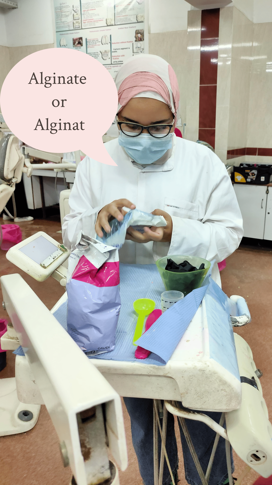
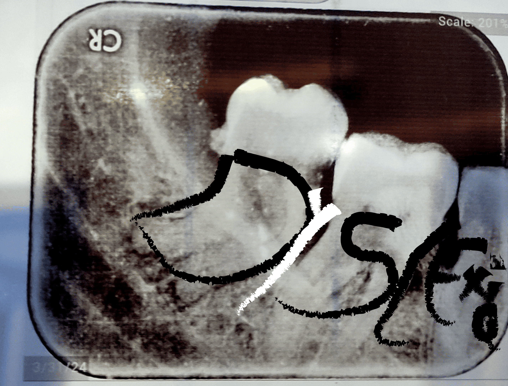
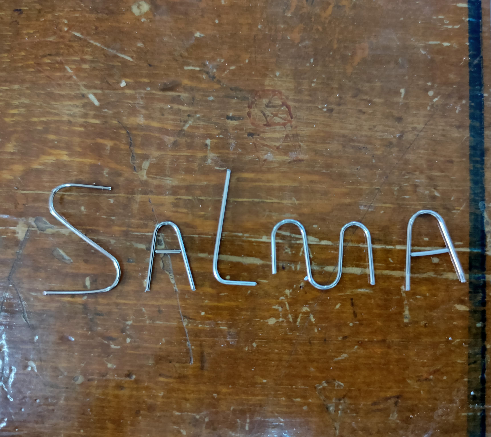
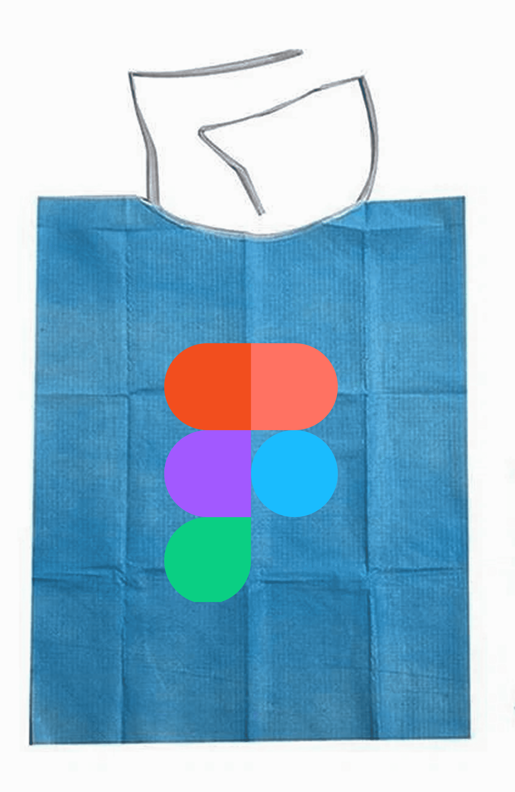

"Salma; The Dentist Who Designed for Dancing Letters"
ü¶∑ Chapter 1: The Dental Student Who Saw Differently
In the land of enamel and x-rays, I learned the art of dentistry—but my textbooks fought me.
Words like "periodontitis" wiggled like loose teeth. "Why does everyone else read this so easily?"
I wondered, squinting at pages that blurred like misty clinic windows.

üí° Chapter 2: The Diagnosis (A Secret Superpower)
Then—the revelation: my brain was wired for stories, not static letters. Dyslexia made:
- Memorizing dental anatomy feel like assembling a puzzle in a tornado...
- But spotting patterns in patients’ pain points? That was my genius.

üîç Chapter 3: The Unlikely UX Training
Without realizing it, dentistry trained me to:
- Decode chaos (a mouth full of cavities = a messy interface).
- Simplify the complex (explaining root canals to nervous patients = writing clear microcopy)
- Design for stress (if a dental chair feels scary, so does a cluttered app!).

üé® Chapter 4: The Pivot
One day, I met a terrible medical app—tiny text, confusing buttons.
"This feels like my old textbooks!" I thought. Lightbulb moment:
I could design tools that don’t require decoding

✨ Epilogue: The UX Designer with X-Ray Vision
Now, I create interfaces that:
- Breathe like a calm clinic (whitespace = emotional space).
- Guide like a gentle dentist ("Next step?" → "Now, we’ll...").
- Celebrate neurodiversity (because differently wired brains deserve joyful tech).

(P.S. Fun fact: My dyslexia helps me spot UX flaws faster—if I get stuck, others will too!)